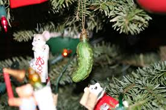

Pickly Situation
In Germany they celebrate Christmas by putting a pickle orgament into the tree somewhere and the child has to find it. Who ever find it gets a bonus present. Some claim that the tradition may not be German after all. One legend says that the Christmas pickle originated in Spain, when two young boys were held as prisoners inside a pickle barrel. The heroic Saint Nicholas rescued the boys and brought them back to life. Either way, a pickle on the Christmas tree is a tradition we can totally get behind.
